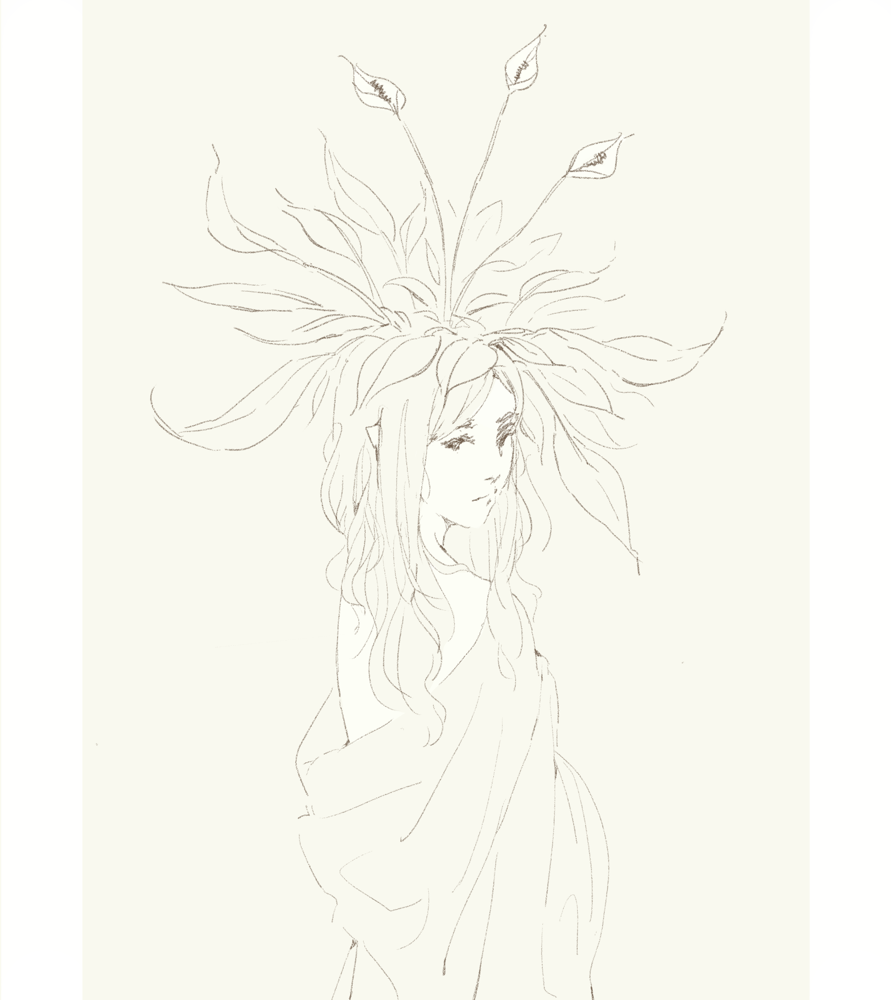

Background
My parents gifted me my first drawing tablet when I was around 14, a Wacom Intuos CTH-480. My first drawing software was recommended by a friend, Paint Tool SAI. Before this, I drew with pencil and paper, extensively doodling in school notebooks and making comics with folded A4 paper; the former still carries on.
In my first year of senior highschool, my parents, again, gifted me the luxury of a screen tablet, the Wacom Cintiq Pro 13. It was between this time and middle university that I was most actively drawing, using Adobe Photoshop and later Clip Studio Paint EX.
I am most thankful for the catalyst that is my parents' generosity, which allowed me to explore digital art at an early age.
Interest
I'd like to describe my art as 'minimalist', may that be a cover for my laziness. I particularly enjoy focusing on linework. Some of my favourites:

Programming stuff
Hello!
This site displays my interest in programming and art.
I've been drawing since the age of 5, whilst programming since the age of 18.
Indonesian and Chinese descent, born in Australia (2001).
A software developer graduate from the University of Technology Sydney (2023).
I love video games too; the little thing below is based off my character from Final Fantasy XIV. One day, I hope to create and publish my own video game.